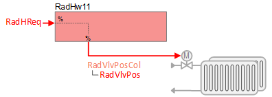
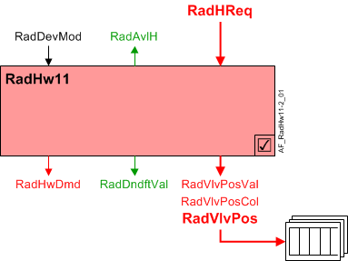
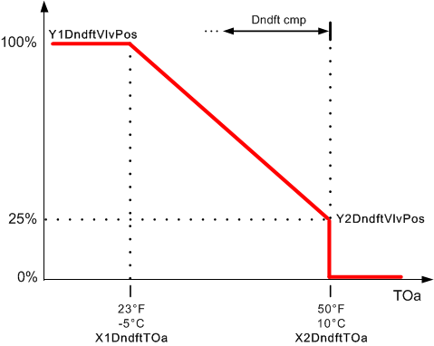
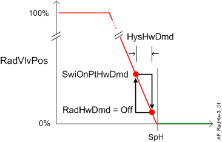

Hot water radiator with downdraft compensation (RadHw11)
 | This application function operates hot water valve(s) for radiator(s) and supports downdraft compensation. The radiator valve position is calculated based on a request signal for heating (from a room controller). Multiple radiator control is supported. |
Required elements and how to configure them:
Element | I/O | Signal type |
|---|---|---|
RadVlvPos "Radiator valve position" | On-board output, Radiator valve position 1 | Water any signal type |
Function
The figure below shows BACnet objects associated with this application function. Primary signal flow is summarized as follows:
Radiator heating request (RadHReq) is received and processed into the output signal for radiator valve position (RadVlvPos).
Basic function: Accept request signal from associated room controller and pass it through a device mode logic switch; Output the result as a command to the BACnet object that controls the device.

| Command or request (or related) |
| Notification of condition or status, or availability |
| Device mode |


Hot water valve modulation: In response to heating demand, the heating valve is modulated to control the room temperature at setpoint. In response to external triggers for special modes such as warm-up, cool down, or safety conditions, the heating valve may be set to off or fully open.
Note
This AF does not perform loop control; its main purpose is to run commands. Loop control processes (for this AF) are managed in the "room" AF(s) that collaborate with this AF to command the end device.
Multiple radiator control: The radiator valve position collection object (RadVlvPosCol) can reference and control multiple radiators.
Radiator valve position objects (RadVlvPos) are referenced by the radiator valve position collection object (RadVlvPosCol); this collection object is a common node for any / all RadVlvPos object(s). The value for RadVlvPos comes from RadVlvPosVal.
Downdraft compensation: The downdraft compensation feature slows the sinking cold air flow at large window surfaces and combats cold wall effect at cold perimeter surfaces. This feature activates the radiator when the outside air temperature drops below a configured value, raising the minimum temperature of the radiator to a value higher than it would be otherwise.
Downdraft compensation is implemented using a linear reset function. The following graphic shows factory default values for X,Y downdraft compensation parameters.
Parameter EnDndft must be set to 1:Yes for downdraft compensation to function (see Configuration).

Device mode: The input signal for device mode is a multistate value.
RadDevMod supports the following states:
- Off
- Control mode (modulation)
- Fully open
- Ctrl.mode & downdraft (modulation plus downdraft compensation)
- Downdraft (downdraft compensation)
Heating available status: When the radiator(s) are available for heating, the binary output signal for "Radiator available for heating" (RadAvlH) will be "Yes" (available). RadAvlH is used by the system to regulate heating resources. For example, if there is a call for heating but the radiator(s) are not available because they are already at maximum capacity (because device mode is fully open), then RadAvlH will signal "No" and the next available heating resource in the temperature control sequence will be activated.
For heating available status to be "Yes", device mode must equal "Control mode" (modulation).
The following figure(s) illustrates control modulation and related functions.

Configuration
 Parameters
Parameters
Description | Parameter | Default value |
|---|---|---|
Hot water demand | ||
Switch-on point for hot water demand | SwiOnPtHwDmd | 4 [%] |
Hysteresis for hot water demand | HysHwDmd | 2 [%] |
Downdraft compensation | ||
Enable downdraft compensation 0:No | EnDndft | 0:No |
Downdraft characteristics for outside air temperature X1 | X1DndftTOa | -5 [°C], 23.0 [°F] |
Downdraft characteristics for valve position Y1 | Y1DndftVlvPos | 100 [%] |
Downdraft characteristics for outside air temperature X2 | X2DndftTOa | 10 [°C], 50.0 [°F] |
Downdraft characteristics for valve position Y2 | Y2DndftVlvPos | 25 [%] |
Internal settings – do not change | ||
Temperature unit | TUnit | [°C] |
Interface
Interface | Description | Type | Ref. | Owned by | |
|---|---|---|---|---|---|
RcgVlvPosCol | Collection of radiant ceiling valve position | ColView | ● | - | |
| RcgVlvPos | Radiant ceiling valve position (1...n) | AO | ◉ | Room segment / Device |
RadVlvPosVal | Radiator valve position value | APrcVal | ● | - | |
RadDevMod | Radiator device mode 1:Off | MPrcVal | ● | - | |
RadHReq | Radiator heating request | ACalcVal | ● | - | |
RadAvlH | Radiator available for heating 0:No | BCalcVal | ● | - | |
RadDndftVal | Radiator downdraft value | ACalcVal | ● | - | |
RadHwDmd | Radiator hot water demand 1:Off | MCalcVal | ● | - | |
RadSplyHw | Radiator supply chain for hot water | GrpMbr | ● | Room segment | |
Engineering and commissioning
None